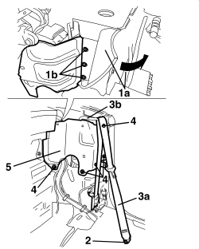

7065A19 IDLER SUPPORT FOR FRONT SEAT BELT (ONE), LEFT OR RIGHT - R.R.
- Path
- Procedures > 70 FITTINGS > 7065 SEAT BELTS AND ACCESSORIES > 7065A FRONT SEAT BELTS > 7065A19 IDLER SUPPORT FOR FRONT SEAT BELT (ONE), LEFT OR RIGHT - R.R.
- Kind
- repair procedure (removal / refitting; the operation number is the code)
- Applies to
- engines: 2.2 JTS, 3.2 JTS; all production periods; only with equipment: Spider
- Interactive page
- https://sloeber94.github.io/elrnDB-aBrrSpdr/en/#/946004198
Applies to: engines: 2.2 JTS, 3.2 JTS; all production periods; only with equipment: Spider
 Removing
Removing
 Refitting
Refitting- Prepare the hood for the operation.
Op. 0010T79 HOOD HYDRAULIC SYSTEM - DISCHARGE AND RESTORE PRESSURE
Op. 7040H21 MOULDING ON PASSENGER COMPARTMENT REAR TRIM - R.R.
Op. 7040H22 PASSENGER COMPARTMENT REAR TRIM (SPIDER) - R.R.
Op. 7040L31 REAR ODDMENTS COMPARTMENT - R.R.
Op. 7040L51 REAR ODDMENTS COMPARTMENT SUPPORT - R.R.
Op. 7040H50 REAR PANEL (ONE), LEFT OR RIGHT - R.R
- Close the hood manually and place the 5th arc in a raised vertical position.
1. Working in the hood housing compartment, detach the cover (1a) as necessary releasing the adhesive, then undo the bolts (1b).
- Open the hood manually, leaving the hood housing compartment cover open.
2. Undo the bolt fixing the end of the seat belt.
3. Return the seat belt (3a) into the reel, releasing it from the idler (3b).
4. Undo the passenger side fixing bolts for the idler support.
5. Remove the idler support.

Applies to: engines: 2.2 JTS, 3.2 JTS; all production periods; only with equipment: Spider
Refitting
Removing- Check that the idler support is not damaged.
- Place the idler support in position and tighten the passenger compartment side fixing bolts.
Component | Fastening | dia | Value (daNm) | Validity |
|---|---|---|---|---|
SEAT BELT IDLER SUPPORT | Bolt | - | 2.2 ÷ 2.6 |
- Extract the seat belt, attach it to the idler and secure the end using the bolt.
- Close the hood manually and place the 5th arc in a raised vertical position.
- Tighten the bolts in the hood housing compartment, then reposition the cover attaching the adhesive.
Component | Fastening | dia | Value (daNm) | Validity |
|---|---|---|---|---|
SEAT BELT IDLER SUPPORT | Bolt | - | 2.2 ÷ 2.6 |
- Open the hood manually, leaving the hood housing compartment cover open.
Op. 7040H50 REAR PANEL (ONE), LEFT OR RIGHT - R.R
Op. 7040L51 REAR ODDMENTS COMPARTMENT SUPPORT - R.R.
Op. 7040L31 REAR ODDMENTS COMPARTMENT - R.R.
Op. 7040H22 PASSENGER COMPARTMENT REAR TRIM (SPIDER) - R.R.
Op. 7040H21 MOULDING ON PASSENGER COMPARTMENT REAR TRIM - R.R.
- If discharged, restore the hood hydraulic system pressure.
Op. 7030H03 HOOD MANUAL OPENING FOLLOWING DEACTIVATION OF HYDRAULIC SYSTEM - CARRY OUT PROCEDURE
Topics linked from this page (7)
- 0010T79 HOOD HYDRAULIC SYSTEM - DISCHARGE AND RESTORE PRESSURE
- 7030H03 HOOD MANUAL OPENING FOLLOWING DEACTIVATION OF HYDRAULIC SYSTEM - CARRY OUT PROCEDURE
- 7040H21 MOULDING ON PASSENGER COMPARTMENT REAR TRIM - R.R.
- 7040H22 PASSENGER COMPARTMENT REAR TRIM (SPIDER) - R.R.
- 7040H50 REAR PANEL (ONE), LEFT OR RIGHT - R.R
- 7040L31 REAR ODDMENTS COMPARTMENT - R.R.
- 7040L51 REAR ODDMENTS COMPARTMENT SUPPORT - R.R.